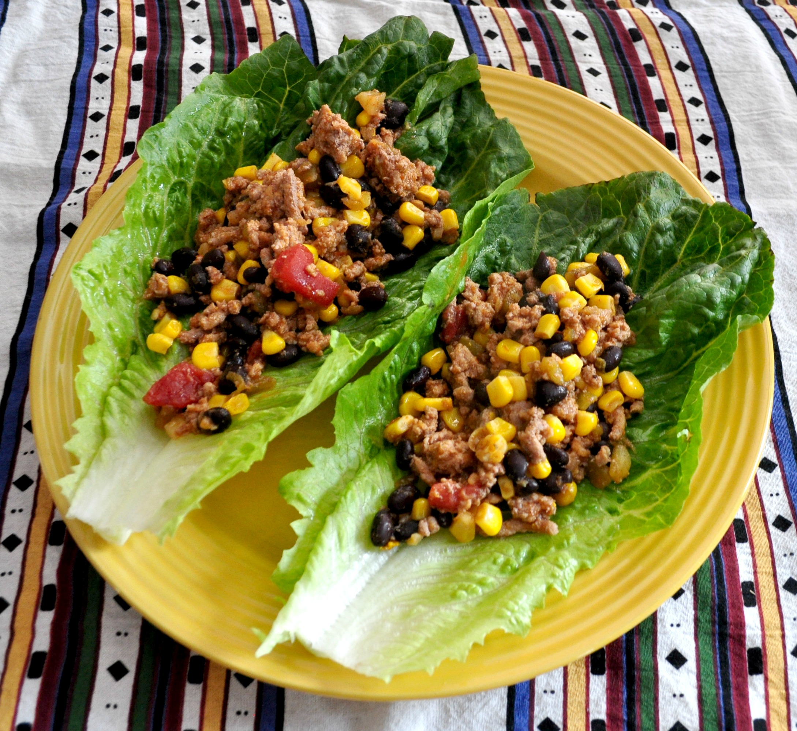

Return
Taco Lettuce Wraps

How to make taco lettuce wraps!
These tacos are super simple and very healthy!
Ingredients
- 1 pound ground turkey
- 1 (16 ounce) package frozen corn
- 1 (15 ounce) can black beans
- 1 (14.5 ounce) can diced tomatoes
- 1 (1 ounce) package taco seasoning mix
- romaine leaves, rinsed and dried
Steps
- Heat a large nonstick skillet over medium-high heat. Cook and stir ground turkey in the hot skillet until browned and crumbly, 5 to 7 minutes. Stir in corn, black beans, diced tomatoes, and taco seasoning. Bring to a simmer and cook until heated through, 10 to 12 minutes.
- Lay lettuce leaves on a flat surface and fill with turkey and bean mixture.